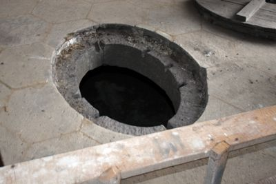
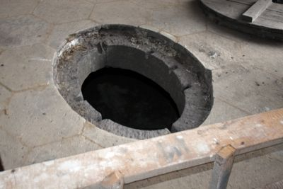
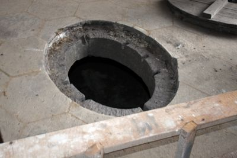

Śladami budowniczych i skarbów krzeszowskich
dodano: 09-09-2014
Zachęcająco brzmi opis wycieczki stronie opactwo.eu: "Szlak "Śladami..." to propozycja dla grup maksymalnie 10 osobowych, które z przewodnikiem mogą zobaczyć niedostępnie miejsca krzeszowskich kościołów jak strychy czy podziemia. To niezwykłe przejście po ukrytych klatkach schodowych i korytarzach. Zobaczycie miejsce ukrycia części tzw. "berlinki" ale również miejsce w którym cystersi chowali kosztowne naczynia liturgiczne i kosztowności przed grabieżą. Niezwykłe wrażenia zrobi na odważnych strych bazyliki: konstrukcja dachu i kopuły ujrzane od góry. Zaplanowaliśmy również inne niespodzianki.
O tej wycieczce wcześniej czytałem w Gościu Legnickim, pozytywnie wspominał też mi o niej kiedyś Stanisław Wesołowski. Oczywiście miałem w planach zapisanie się na taką wycieczkę - musiałem tylko być w Krzeszowie w czasie kiedy będzie organizowane kolejne "przejście". Okazja nadarzyła się 16 sierpnia 2014 roku - telefonicznie zadeklarowałem udział w wycieczce a potem zapłaciłem 35 zł i cierpliwie czekałem o wyznaczonej godzinie przed Obsługą Pielgrzyma. "Moja" grupa liczyła tylko pięć osób. Nasz przewodnik, pan Krystian Michalik, wręczył nam na początku gustowne niebieskie kaski i latarki - jak się potem okazało, były one przydatne.
Sama wycieczka trwała blisko dwie godziny i w największym skrócie przebiegała mniej więcej tak: kościół św. Józefa - strych, zakrystia, organy; bazylika: strych, wieża zegarowa, mechanizm zegara, organy, ukryta klatka schodowa i skrytka nad kaplicą loretańską, podziemia pod transeptem bazyliki. W mojej ocenie wycieczka naprawdę bardzo interesująca, można zobaczyć miejsca normalnie niedostępne. Poniżej kilka moich zdjęć (chronologii brak).
